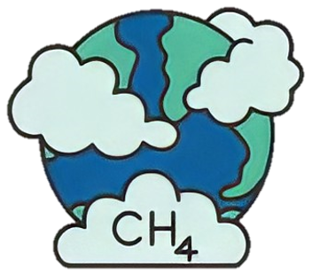
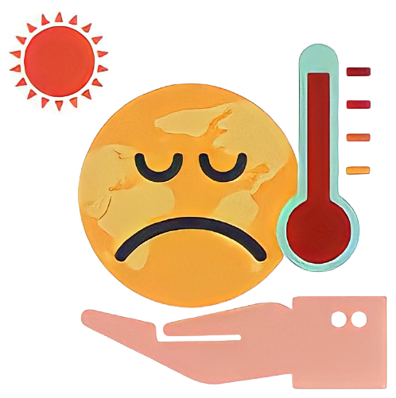

BAHAYA
SAMPAH ORGANIK
MEMPRODUKSIGAS METANAKarena tidak mendapatkan paparan oksigen yang cukup, sampah organik yang menumpuk dapat menghasilkan metagonen yang terus terakumulasi dalam jumlah besar dan terperangkap di dalam tanah. Saat tanah sudah mencapai ambang batas, sampah-sampah tersebut dapat meledak dengan kekuatan layaknya bom besar. |
 | |
ANEKA PENYAKIT BERBAHAYAPada faktanya, tumpukan sampah organik adalah habitat yang paling disukai hewan-hewan penyebar penyakit menular melalui aneka bakteri dan virus. Misalnya saja seperti penyakit tetanus yang bisa menjangkit ketika ada sampah logam yang melukai kulit dan terkontaminasi oleh bakteri. Selain itu, terdapat kemungkinan untuk terjadi infeksi kulit, keracunan makanan, hepatitis A, infeksi salmonella, dan seterusnya. |
||
MEMICU GLOBAL WARMINGSampah organik yang hanya menumpuk di tempat pembuangan akhir lama kelamaan akan menjadi molekul gas metana yang jika sampai lepas ke udara akan menjadi 21 kali lebih berbahaya bagi lapisan ozon dibanding karbon dioksida karena menyerap panas lebih banyak. Dan pada akhirnya situasi ini akan menyebabkan perubahan iklim yang lebih serius bagi kehidupan manusia di bumi. |
 | |